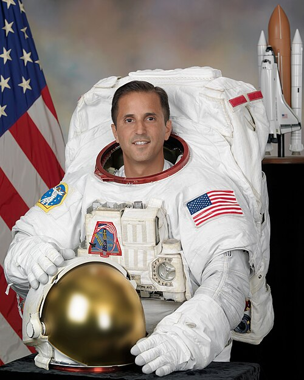
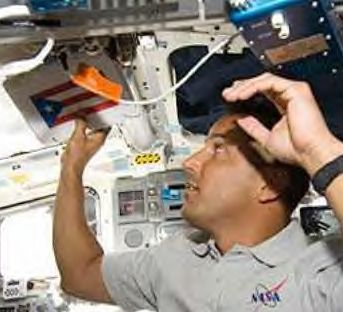
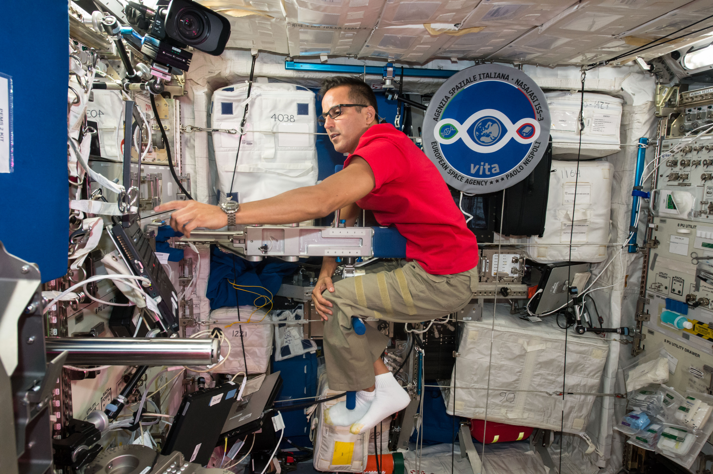
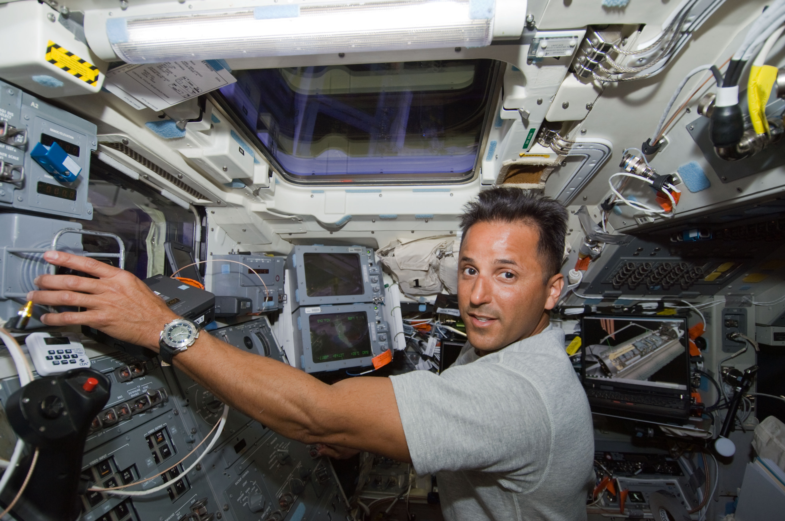
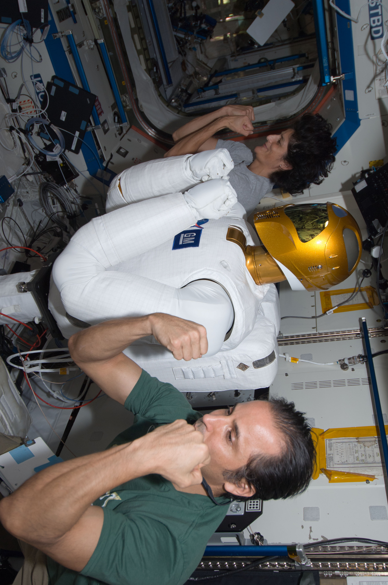

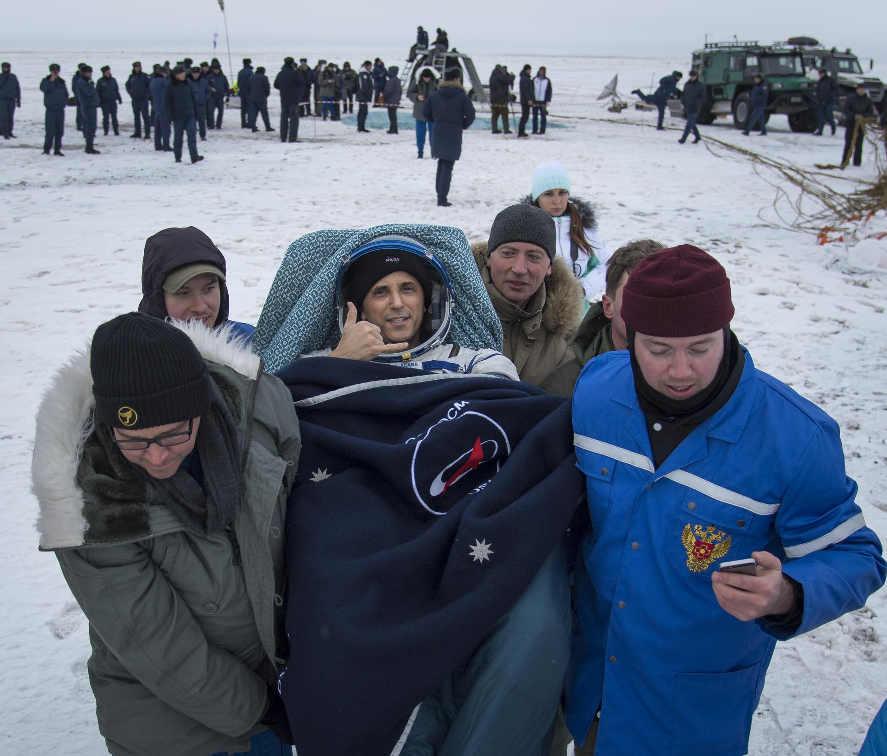
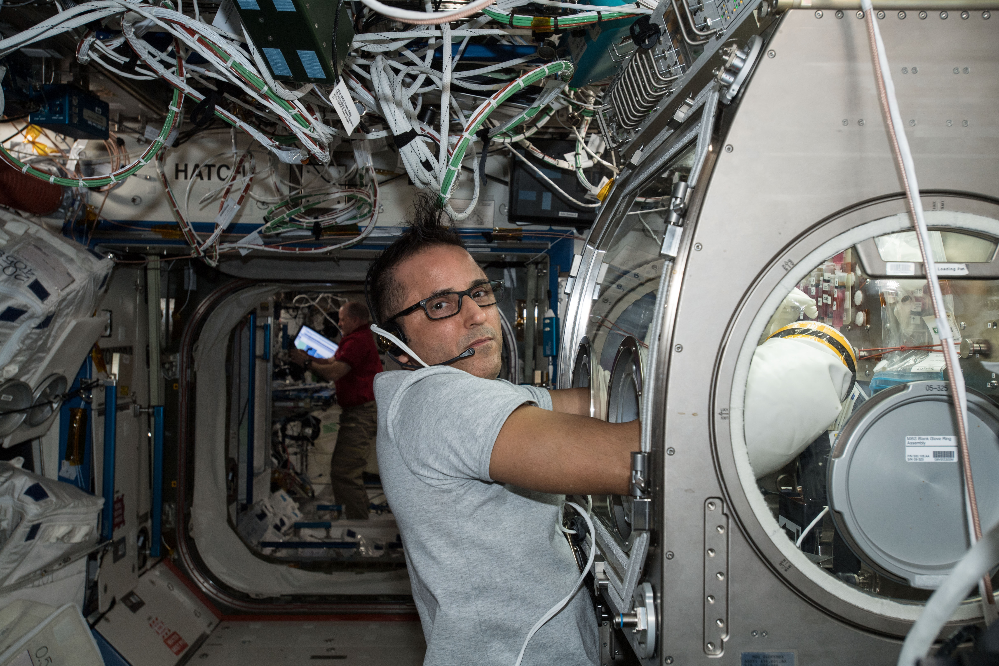
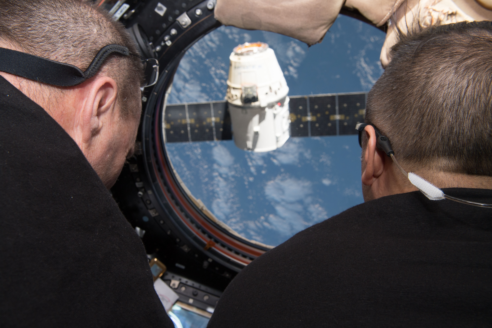
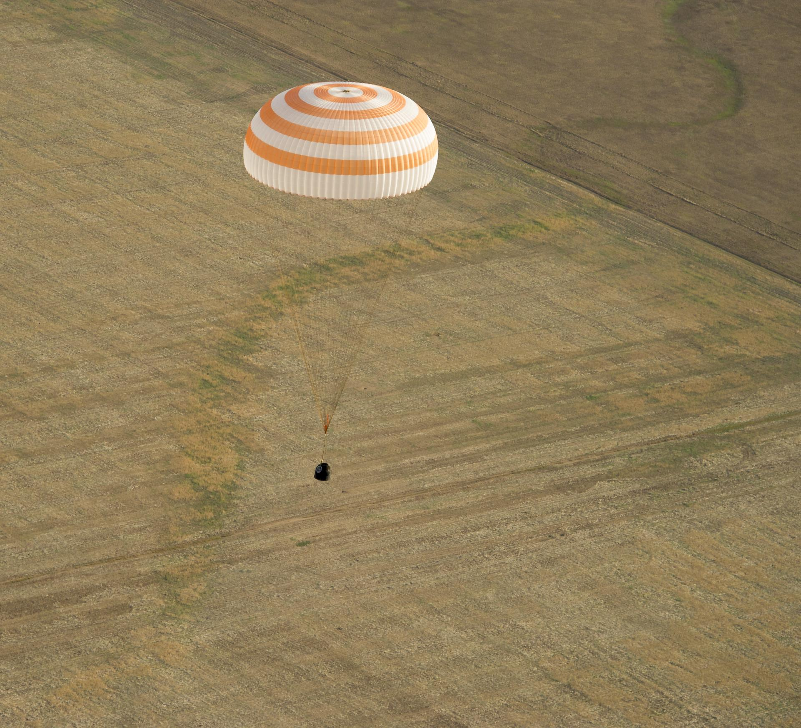
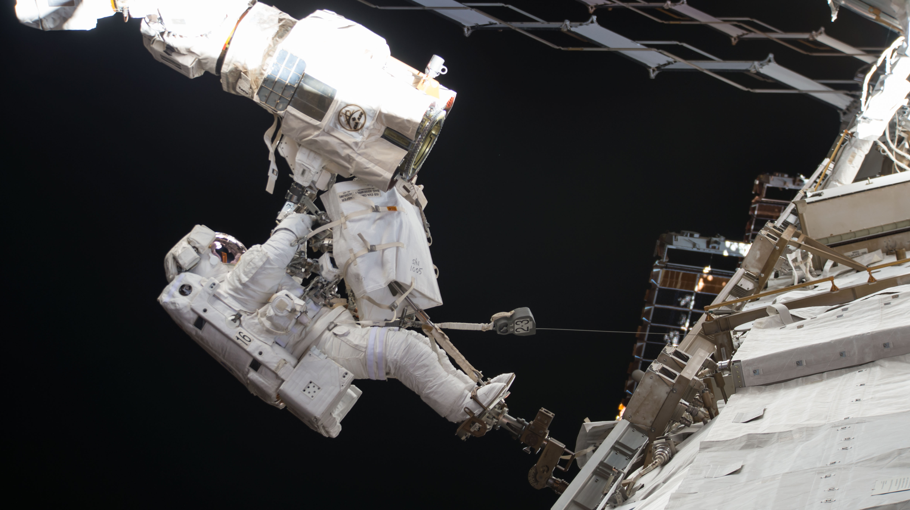
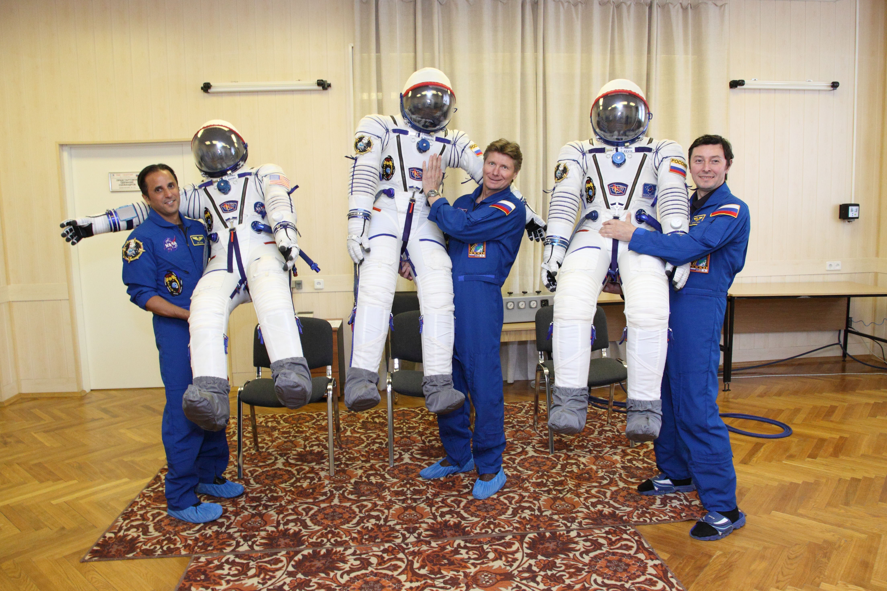
Acaba was born on the 17th of May 1967 in the town of Inglewood in California with his parents coming from Puerto Rico. During his childhood Acabá enjoyed reading, especially science fiction and in school he excelled at both science and mathematics also during his childhood Acabá was constantly being shown educational films because of his parents and when Acabá saw a video of the Apollo 11 moon landing that he got interested in space. In high school, specifically his senior year he became intersted in scuba diving and decided to get scuba certified at the age of 17 through a training programme at his school, This caused him to get intersted in geology. Acabá also enjoyed other activities like hiking, camping and kayaking. In 1985 Acabá graduated with honors from Esperanza High School.
In 1990 Acabá got a BS in Geology from the University of California, then in 1992 Acabá got his MS in geology from the University of Arizona. He spent 6 years as a sergeant
in the US Marine Corps Reserve and 2 years in the US Peace Corps. During this time Acabá worked as a hydrogeologist in LA. Acabá also spent some time in the dominican republic
training 300 teachers, after that he spent some time as manager of Caribean marine research at Lee Stocking Island.
In 2004 Acabá was selected as a Educator Mission Specialist and in 2009 he went to space on STS-119 to deliver the P6 solar array.
Acabá moved back to Florida and became a shoreline revegetation coordinator in Vero Beach and spent a year teaching mathematics and science in a high school, 4 years at Dunnellon
Middle School and briefly at Melbourne High School. In 2012 Acabá started work on his MEd at the College of Education at Texas Tech University also in 2012 Acabá went to space
again on soyuz TMA-04M/ISS Expedition 31/32. In 2015 he earned his MEd. Finally in 2017 he went to the ISS aboard Soyuz MS-06 for ISS Expedition 53/54.










